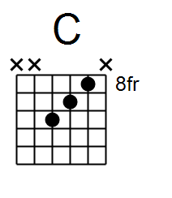

ランダムに再生されるトライアドを押さえる練習
※表記方法
1、2、3弦を押さえるパターンでルート音が1弦の場合 123-1
1、2、3弦を押さえるパターンでルート音が2弦の場合 123-2
1、2、3弦を押さえるパターンでルート音が3弦の場合 123-3
2、3、4弦を押さえるパターンでルート音が2弦の場合 234-2
2、3、4弦を押さえるパターンでルート音が3弦の場合 234-3
2、3、4弦を押さえるパターンでルート音が4弦の場合 234-4
押さえ方
Cの例です。他のコードの場合ポジションを変えてください。
1、2、3弦を押さえるパターン
1弦がルートの場合

2弦がルートの場合


3弦がルートの場合


2、3、4弦を押さえるパターン
2弦がルートの場合


3弦がルートの場合


4弦がルートの場合
